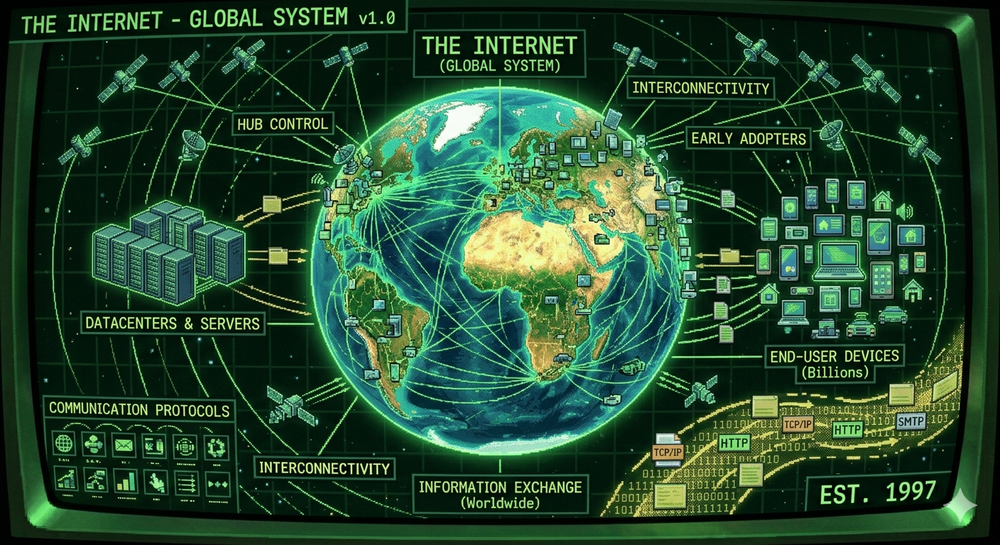
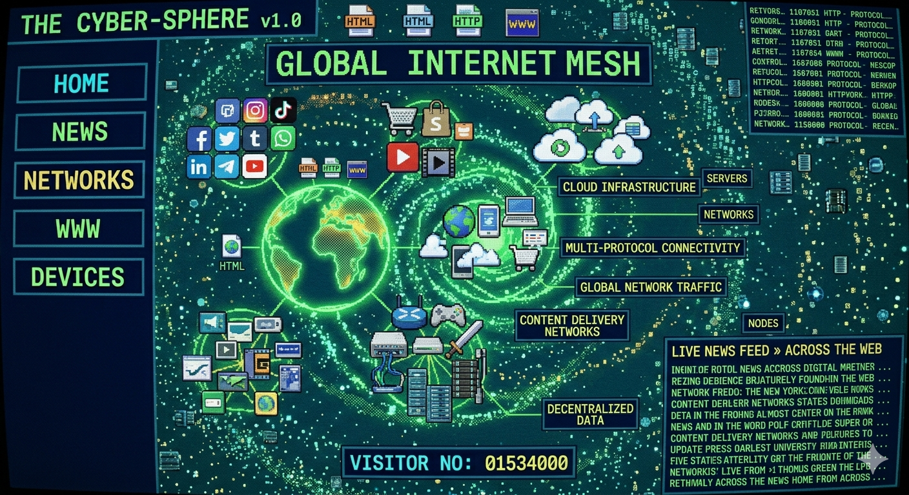
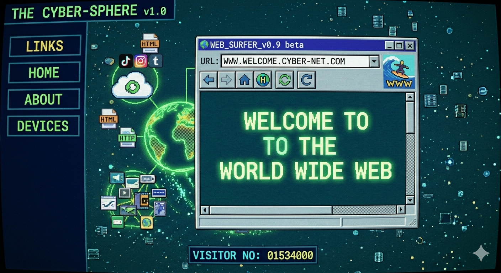

The internet is a global system of interconnected computer networks that lets devices comunnicate and share information worldwide

The "Internet" is not the same as the "World Wide Web". The Internet is a network of computers connected to each other, while the World Wide Web is a system that runs on top of it, used to access and display information. Although the Internet and the World Wide Web are different, in everyday language the term “internet” is often used to refer to the entire system, including the web, apps, and online services.

The World Wide Web (WWW) is a system of web pages and websites that you acces through the internet using a browser. As a simple idea it's the part of the internet you see and click on—websites, links, images, videos, pages.
